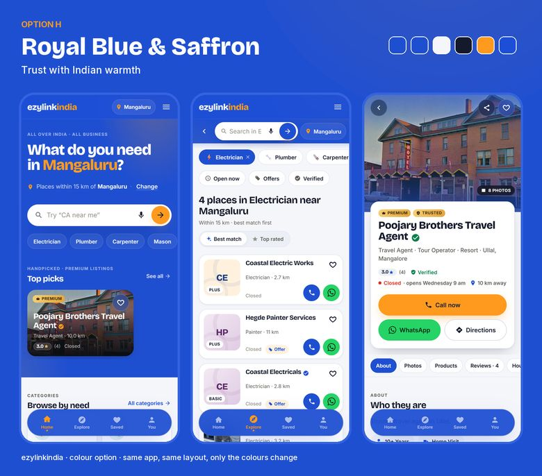
H
Royal Blue & SaffronA confident royal blue header with a saffron call button. Feels dependable, like a bank or a big brand, but still warm.Our pick
Today the app’s header, hero and bottom bar are near-black. These nine mock screens replace that dark shade with colour (H to M) or make the app fully light (N to P). The black buttons change to the brand colour too, so the only dark thing left is the text. Nothing in the app has changed; the layout is identical in every option.
Looking for the dark-header options instead? See the first set (A to G).
Home screen on a phone, same moment, same data.
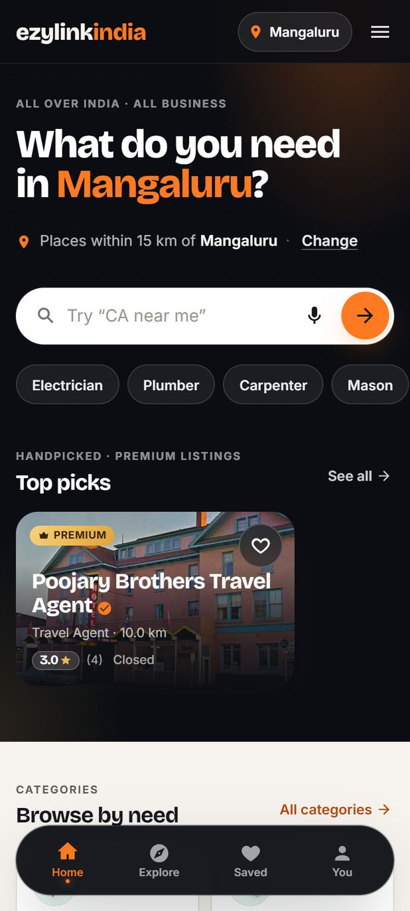
Now · Midnight & Saffron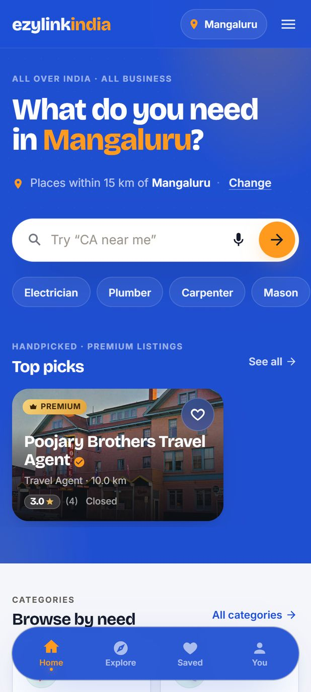
H · Royal Blue & Saffron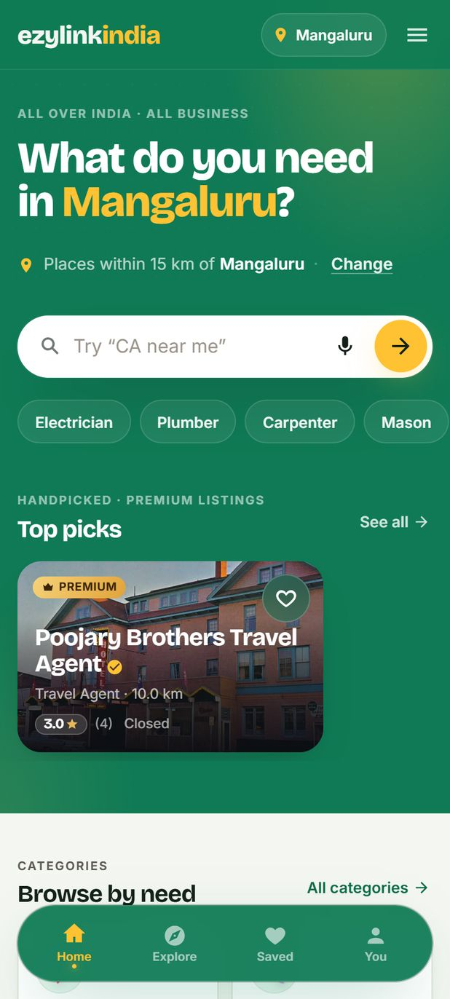
I · Emerald & Mango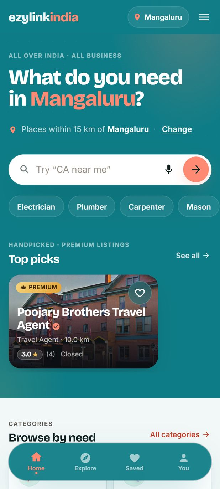
J · Teal & Coral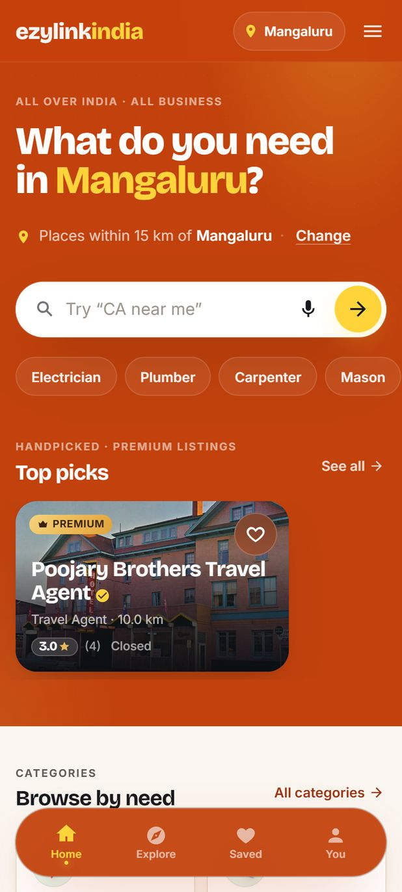
K · Festival Orange & Yellow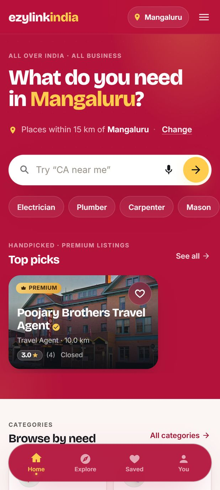
L · Kumkum Red & Gold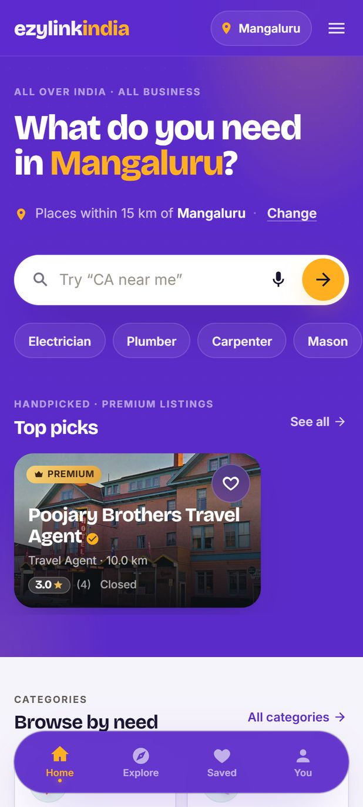
M · Violet & Marigold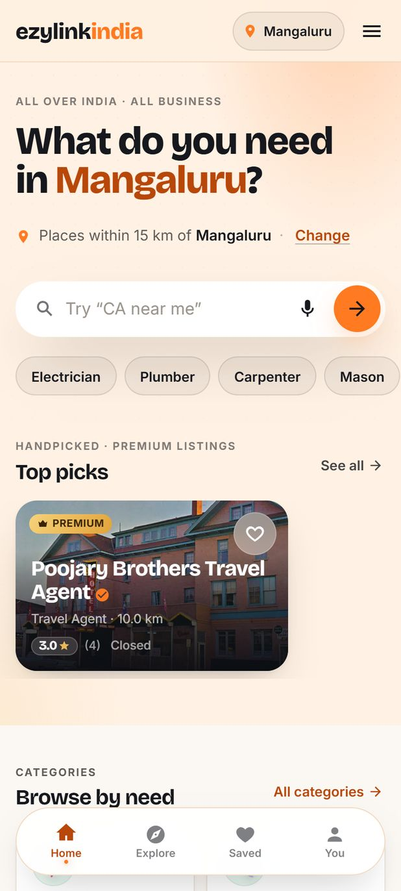
N · Daylight Saffron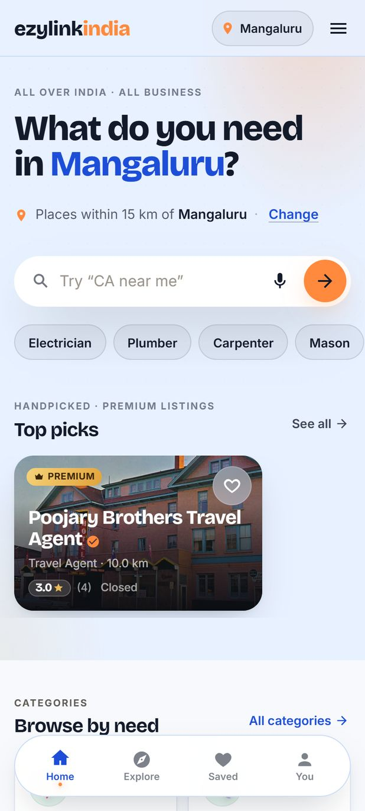
O · Sky & Tangerine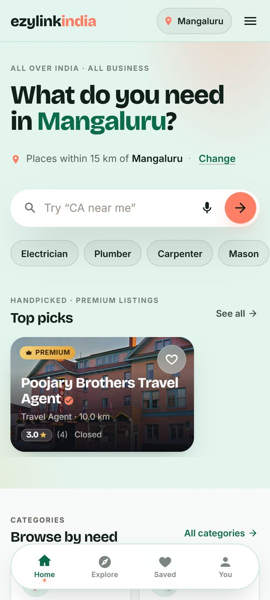
P · Mint & CoralThe header, hero, dock and footer take a rich colour; the text on them stays white. Letters H to M.

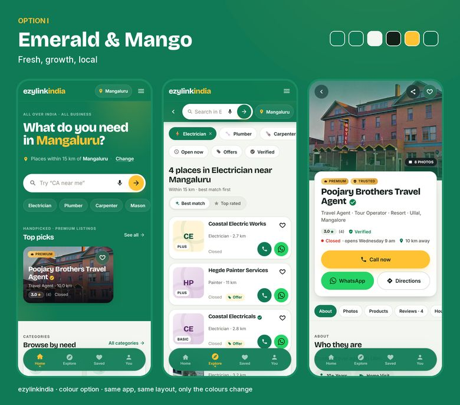
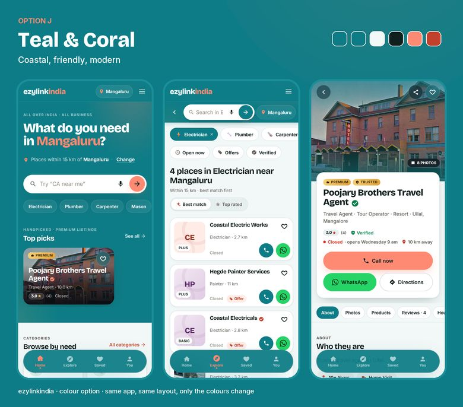
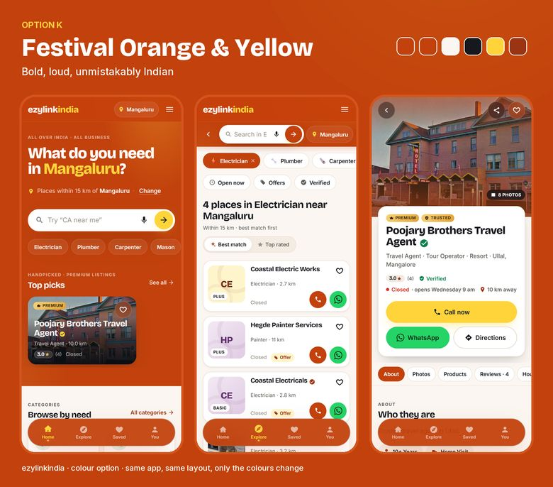
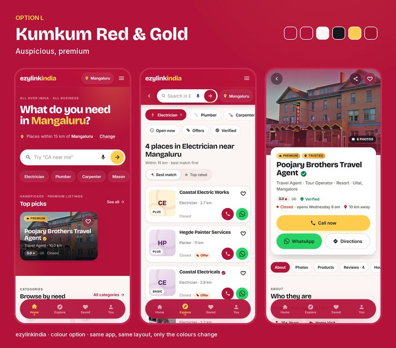
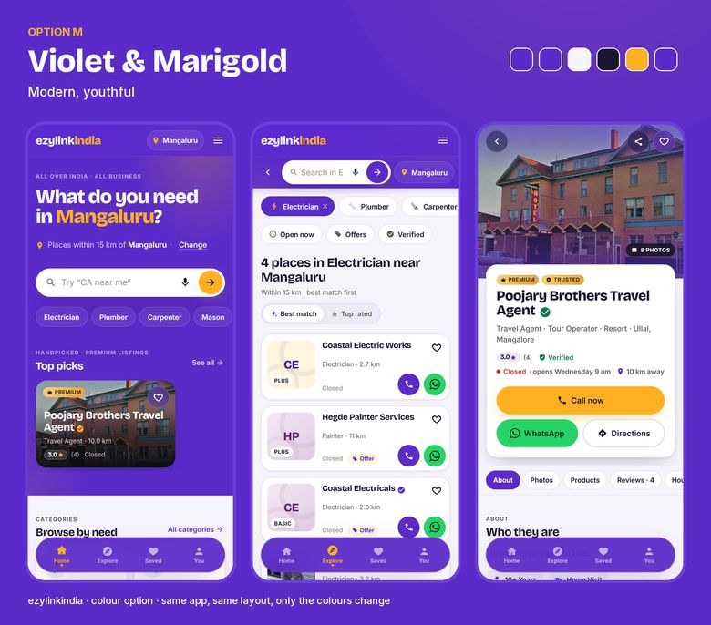
The header and hero turn into a soft tint with dark text; the colour lives in the buttons and links. Letters N to P.
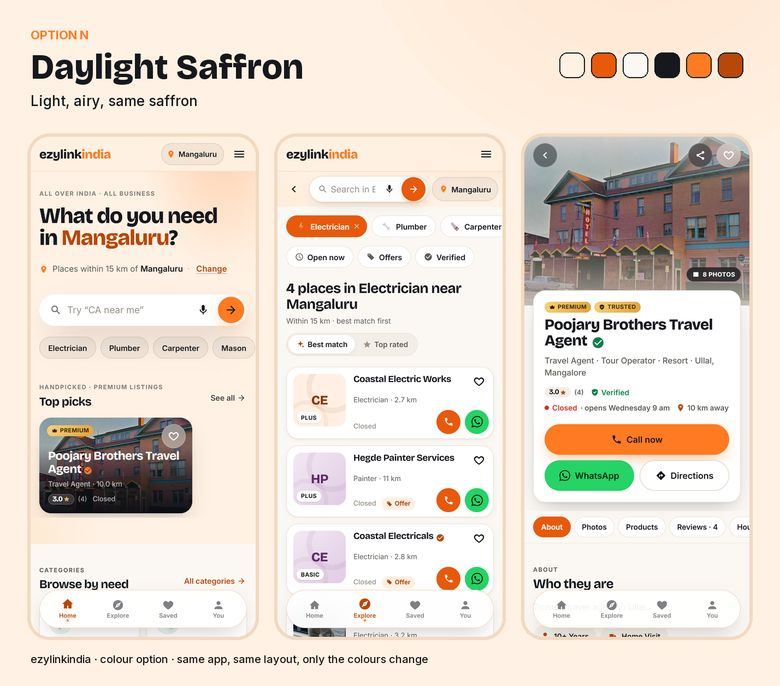
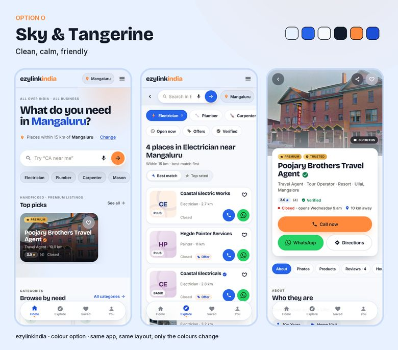
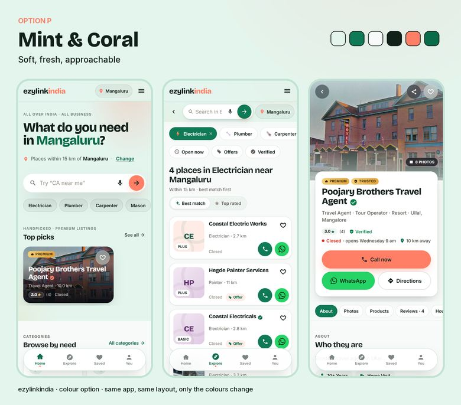
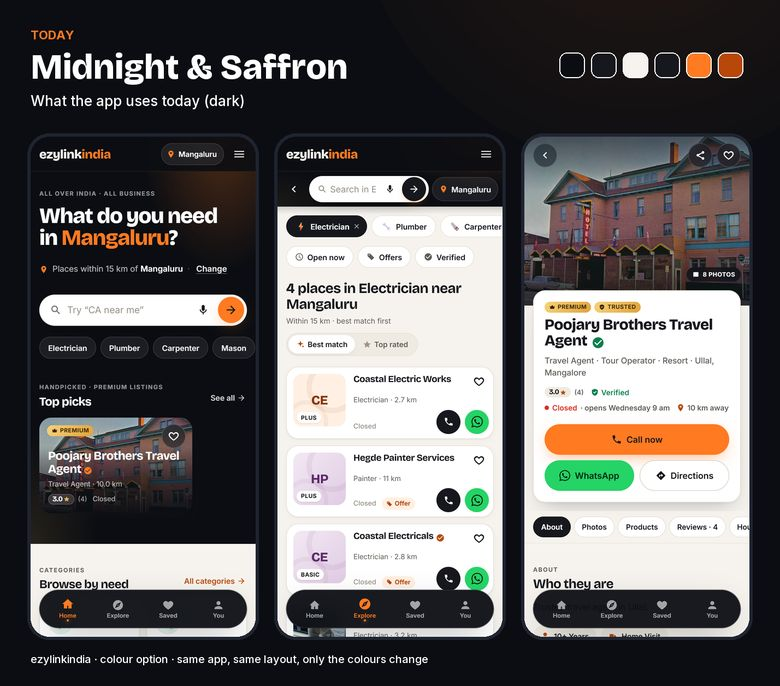
Mock screens made from the real app (build 1.0.6) with only its colours swapped. Photos, ratings and “Open/Closed” are live data at the time of capture.